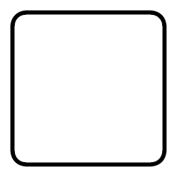

The Binding of Isaac - Four Souls Dice Roller
Information
This page is an online dice roller for the upcoming tabletop game The Binding of Isaac: Four Souls
which has just recently completed a successful Kickstarter campaign.
The game uses two different dice, with one being a six-sided die while the other is an 8-sided die.
Instructions
- Press "Roll Die" underneath the designated die to simulate a roll
- Press Enter on your keyboard to roll the six-sided die
- Reload the page to refresh your dice rolls
Six-Sided Die:

Eight-Sided Die: